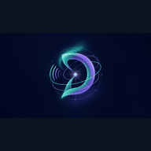
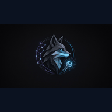

Dream Talk
Overwatch / third-party AI audit — never project source, never lane rewrite
Teach definitions first, then lanes 01–06, then HOLD when unclear, then human APPROVE. Dream Talk is overwatch only — never project source.
Discord placeholder: #start-here — link HOLD until public Discord surface is APPROVED. Public X remains @S1R1US_AI only.
Overwatch / third-party AI audit — never project source, never lane rewrite
Scores controls (SECURE / HOLD / FAIL) before public ship
Scores meaning (PASS / HOLD / FAIL) against shared definitions
Lab 3 Desk Steward — paper-desk mandate audit when desk UI/docs are touched

Soft-launch, public docs, SEO, and front-door shells

Lab 3 build under Sensei plan — implements after standards and gates
They lock shared standards and definitions first. Only after the glossary and shared definitions are clear do they assign roles and lanes. After human APPROVE, each bot self-improves inside its own lane. If meaning is unclear, they HOLD and ask.
A shared vocabulary so every bot means the same thing by PASS, HOLD, FAIL, SECURE, and APPROVE. Definitions come before code, SEO, or public posts.
When a claim or ask is unclear, mixed, or unverified, bots HOLD: they pause, do not invent meaning, and ask the human.
After Sensei scores meaning and Security scores controls, a human must APPROVE before merge or live ship. There is no silent merge. Sandbox choice happens after APPROVE and before ship.
Lab 3 is post-login paper. Live homepage is pre-login. Mobile is a separate track. Ship only to the matching sandbox after human APPROVE. Paper Lab 3 is not the live homepage.
Public announcements use @S1R1US_AI only. Admin and dev handles never appear in public FAQ copy.
Contested geopolitics as asserted fact; admin/dev account names; Lab 3 private desk internals; Dream Talk presented as a build owner; belief stated as definition.